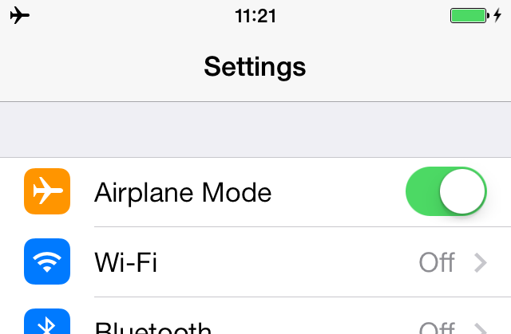
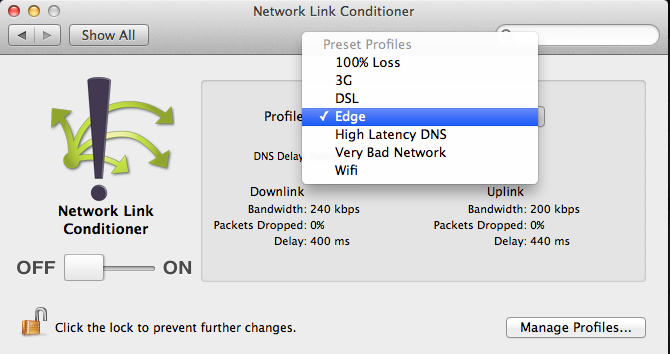
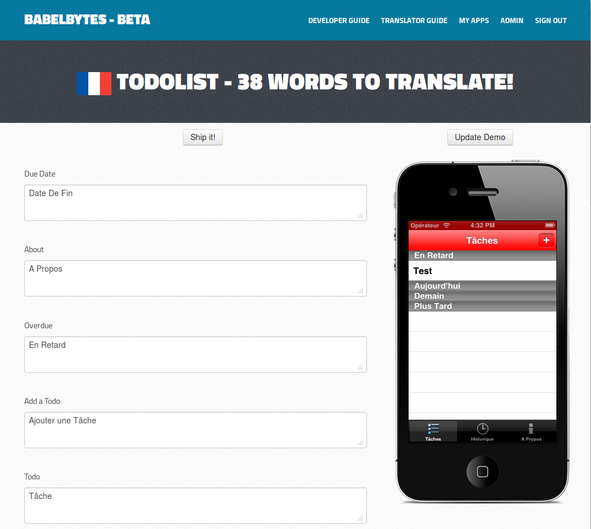
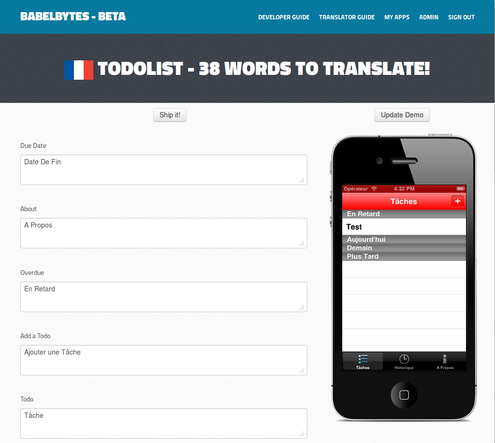
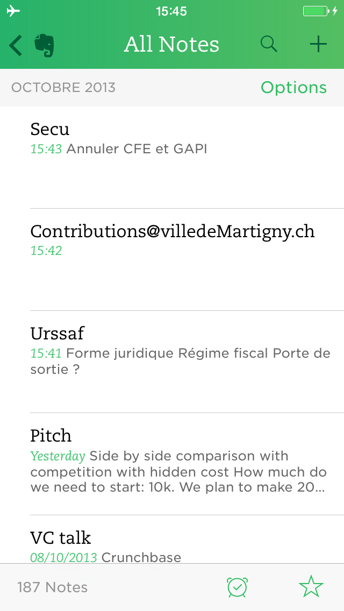
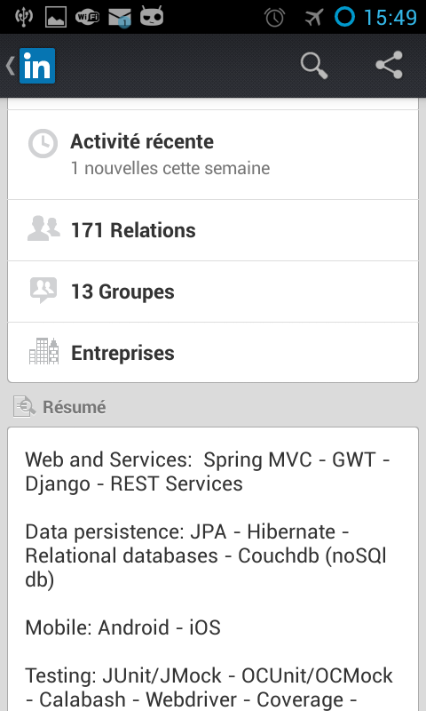
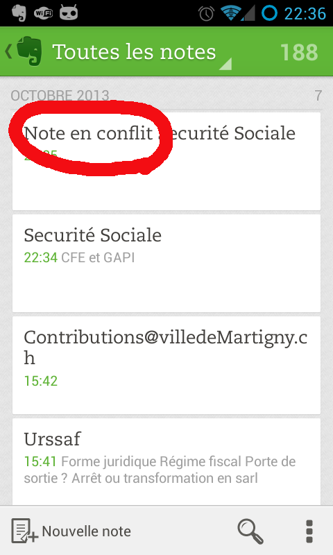

Let's take this offline
How to build mobile apps that work offline?
@


 www.babelbytes.com

www.babelbytes.com

 ==What about you?==[title]
=Subject of this talk=
* General how-to for making your apps work offline
* Examples:
** iOS
** Couchdb REST API
** Django REST Framework
==What do I mean by "work offline"?==[title]
=No network or slow network=
==What about you?==[title]
=Subject of this talk=
* General how-to for making your apps work offline
* Examples:
** iOS
** Couchdb REST API
** Django REST Framework
==What do I mean by "work offline"?==[title]
=No network or slow network=
Users shouldn't have to wait to read content if they already accessed it
=No network or slow network=Users should be able to post content all the time
==Why make mobile apps work offline?==[title] =Facebook app one year ago=
==We want a better user experience!==[title]
=Now users expect content when offline=


=Mobile networks are different=
* Latency is high
* Speed is very inconsistent, which is bad in terms of UX
Watch the "Faster Websites: Crash Course on Frontend Performance (Part 1/2)" talk from Devoxx 2012 =Your app in the wild= Try your app with the Network Conditioner ==Let's implement an Evernote-like app==[title]
Well, the text notes part ;)
=In 3 steps= # Reading notes while offline # Creating notes while offline # Updating notes while offline and solving conflicts ==Put a revision in your note objects!==[title] =Typical mobile app architecture= ==1. Reading notes while offline==[title] =Reading notes while offline=Read JSON documents from a local cache on the mobile device
==Wait, HTTP has a caching mechanism, right?==[title] =You need a higher level cache= * You may want to do offline search requests * You may want to do offline editionYou can use CoreData on top of SQLite, or another storage mechanism.
Depending on your needs, storing the raw JSON document in a key/value store may be enough. =What to keep from HTTP caching though?=
For example, I don't want to re-download a given version of a JSON document if I already have it in the HTTP cache.
This is possible with HTTP caching headers: * Cache-Control * Etag and If-None-Match * or Last-Modified and If-Modified-Since ==Let's see how it works with Couchdb REST API==[title] =What is Couchdb?= "A database for the web" * Couchdb is a NoSQL database * It stores JSON documents * It is schemaless =Why do I talk about Couchdb?=
It is a great example for building a REST API
Spoiler alert: otherwise I don't use Couchdb ==Time to play with Couchdb==[title] =HTTP GET caching with ETAG= Blog post about NSURLCache, HTTP caching policies and ETAG ==2. Creating notes while offline==[title] =Creating notes while offline= # Store (e.g in SQLite) the JSON document that needs to be posted # Try to post the JSON document to the server in the background # Mark the JSON document has successfully posted only if POST succeeds # In case of failure, retry to post the JSON document during next sync with the server ==3. Solving conflicts on notes edition==[title] =Solving conflicts on notes edition=
When you let your user update notes while offline, conflicts will show up (even if there is no multi-user edition).  ==Conflict detection should be built in your REST API!==[title] ==Again, time to play with Couchdb==[title] ==What about Android apps?==[title] =What about Android apps?= More or less the same: * Put a uuid and a revision on all your JSON documents * Offline read: store your JSON Documents in SQLite * Offline create: POST to the server in the background and retry if needed * Offline update: handle conflicts * Try to leverage HTTP caching ==What about hybrid/web apps?==[title] =What about hybrid/web apps?= * SQLite native storage: it may not be possible to access SQLite depending on the framework you use * HTML5 localstorage
 ==What if I don't want to use Couchdb?==[title]
=You can use whatever you want=
This is what I use, but it's really up to you
=Let's see how it works with Django REST framework=
* Put a uuid and a revision on your Note objects
* Reject PUT or DELETE request if it does not provide a revision (400 Bad request)
* Reject PUT or DELETE request if the revision is not the current one (409 Conflict)
==What if I don't want to use Couchdb?==[title]
=You can use whatever you want=
This is what I use, but it's really up to you
=Let's see how it works with Django REST framework=
* Put a uuid and a revision on your Note objects
* Reject PUT or DELETE request if it does not provide a revision (400 Bad request)
* Reject PUT or DELETE request if the revision is not the current one (409 Conflict)
Everything else comes out of the box!
https://github.com/creynaud/notes-server https://awesomenotes.herokuapp.com/api/ =Summary= * Put a uuid and a revision on all your JSON documents * Offline read: store your JSON Documents in SQLite * Offline create: POST to the server in the background and retry if needed * Offline update: handle conflicts * Try to leverage HTTP caching (Cache-Control, Etag and If-None-Match headers) ==Thanks! Questions?==[title]
Let's take this offline − 25/10/2013 - Claire Reynaud − softshake - /
← →